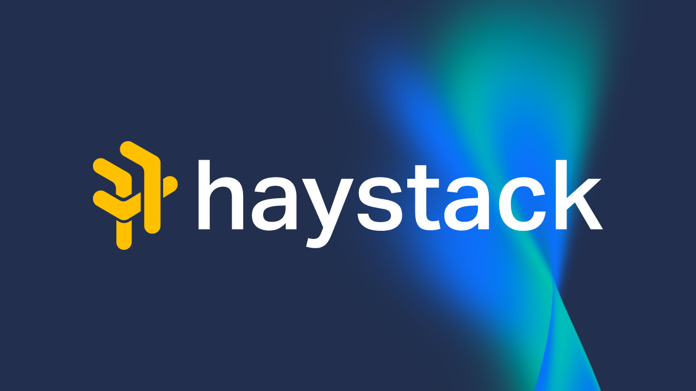

Haystack Live - October 2023
Introduction
Haystack hosted their very first in-person tech event at the Tyneside Cinema in Newcastle. Haystack are a tech hiring marketplace and want to do their part to lift up the North East tech community and for the first event they had three amazing speakers lined up along with opportunities to network. Haystack also had some great free merch on offer including bags, T-Shirts and rubber ducks!
Should you become a cloudy person? - James Sherwood-Jones
James transitioned from a software engineer to a dev ops role, so should you become a cloudy person. James went self-employed quite recently. Should you be a cloudy person? No. It depends on who you are and where you are in your career and what drives you and the work you do. Will talk about the practical day-to-day stuff. James created websites in FrontPage and learned to code to make RuneScape private servers, learned Linux so they could host their stuff somewhere, they rented their first server in 2010, they have been a pure software developer for two years, software and cloud for four years and been a cloud pure engineer for two years. They did joint roles in software and cloudy stuff, they spoke to someone who was a cloud tech lead and became a cloud person full time.
What is a cloudy person?
You could be a cloud, dev-ops, platform, site reliability engineer - this is a bit different to the other three, so what is the difference. Typical day for a cloudy person is reading the AWS documentation, reviewing code from cloudy peers and can work closely with dev teams, reviewing code from dev teams, troubleshooting in AWS, responding to operation alerts and building new infrastructure in code.
Team models for cloudy people and developers but this can vary depending on where you work, there are different interaction models, this can be very important to your happiness and if you are a new cloudy person this can be important to how much you can learn. There is an anti-pattern where cloudy people and dev teams where there is a divide where they fire tickets at each other. Team models red flags can be where dev teams communicate through a project manager, release velocity is slow - look for multiple releases per day, teams only communicate with tickets / support queues, cloudy people don't understand how devs work or what services they are building, lack of trust between teams, the cloudy people build a “platform” but it is hated by the dev teams and they don't understand it. People who are building the code separately from the platform do the people understand the product or what the developers are creating. Green flags for team models include excellent working relationship between teams or fully integrated teams, the “platform” if one is present is treated as a product and bonus points for technical product manager, many successful release every day, cloudy people understand challenges dev teams face and help bring improvements that can be adopted widely in the business - seen as an enabler that speed development, releases and improves operations and there is trust between teams.
Why do we care about team models for cloudy people? May be transitioning into a new role and need support, an “us-and-them” job will teach you dev ops tools but no dev-ops culture, excellent collaboration means you can learn cloud and ops skills, platform teams treating it a as product benefit from your dev skills such as testing, release automation and clean code and have people in complementary roles. Ultimately you want to enjoy your job, learn and keep your coding sharp.
Skills of a cloudy person
Skills of cloudy people include networking - talking to humans, how machines talk and basics of IP addressing along with cloud - different types of compute, infrastructure as code tech e.g. Bicep, Terraform, CDK, messaging systems e.g. Kafka, SQS or RabbitMQ and permissions including roles and access control. Serverless if applicable including functions as a service and interacting with data sources from those. Operations such as talking to humans, metrics, tracing, logging and learning which is responding so when something goes wrong or when people can't do the thing they want to do anymore and hopefully will have some kind of automated monitoring that will tell you something is wrong before people do then fixing the system, can also have a flow of the system and see how the data flows between many different services. Containerisation (if applicable) including building and running containers and can learn a few options such as Kubernetes and need to know about making and running containers. Releasing software including CI/CD and deployment styles including canary, blue/green and feature flags. System admin including basics of Linux and Windows along with config tools such as Ansible, Package, Chef and Puppet.
The Good
The good of being a cloudy person - fun new challenges and keep things fresh, learning including being better at building stuff, autonomy and ownership (if working on a new project) along with what it means to be a software developer, learn operational skills and empathy and can be a bridge between teams and help them have better outcomes.
The Bad
The bad of being a cloudy person - high cognitive load as need to learn many cloud skills, software projects and dev ops projects so there can be a high volume of stuff to learn. Frustrations of cloud vendors, APIs, developer experience and user experience. Requires a lot more emotional intelligence than dev work and can be very draining depending on personality type and if hate conflict don't be a cloudy person. Things can be poorly documented and difficult to use in the cloud and the buck stops with you if are a cloudy person. You need to be invested in people if you are in a role that enables people to do work, or do that work better or faster, can have some days where want to be alone or talk to others and if you don't like talking to people then it may not be for you. Balance people's needs with security with reliability, and this can create conflict so just need to navigate that and resolve issues combining people's wants and desires.
The Ugly
The ugly stuff of being a cloudy person is if you have to change companies and can't assess how companies work internally so may have siloed teams. Operation load being too high such as constant pages - you may not even be on-call at all right now or losing touch with your original skills and then wanting to go back. It can be overwhelming to get focus time and have to respond to stuff and have to balance context and priorities and know what to do first If do a cloudy role you are more likely to be on call and makes it hard to plan things and don't want to be woken up early in the morning but many companies will renumerate people for being on call. If have energy and time to mess about with computers outside of work, so if don't want to do cloudy stuff will have some relevance with developer or other roles so keep new skills sharp so you can go back if needed.
The Alternative
The alternative of being a cloudy person, so if like cloudy stuff is serverless - although is not quite as hot as AI but it is not far off, in many organisations serverless means no-ops so means you are not managing machines and can mean devs building their own infrastructure, so with a serverless job you are doing many of the cloudy job stuff anyway. Find a balance of cloud and dev skills including startups that will let you flex or a larger established business that needs that. You could blag it and say you can do cloudy things and work on the things you need to get better at - but think about a soft transition into a role. You don't have to apply as a position as a dev-ops engineer to transition into a cloudy role but could prioritise a role that has that kind of horizontal movement.
Conclusion
look for safe way to try the role of a cloudy person without committing, break learning up into achievable chunks, keep your dev skills up-to-date, do the job market research first. Speak to a range of recruiters and check the Haystack app! Speak to people in the role you desire and learn the good, bad, and ugly or consider a company doing a hybrid such as serverless or decentralised infrastructure. If you want to be retitled into something else so need to know what the opportunities are and know what the relevant skills that are needed and see what jobs you can get.
Landing your first tech leadership role - Andrew Waters
Background
Andrew is CTO at Ctrl Hub and been there for a few weeks, they were head of engineering in their last role, before that were a dev ops engineer, was a platform engineer before that, before that they ran their own business, and their first office was next to the Tyneside Cinema and their first big customer when setting that business up. They aim for a softer side of organisational work and breaking down silos.
What is leadership?
The action of leading a group of people or an organisation but better described as ability of someone or a group to influence or guide followers or members of an organisation, society or team. Leadership styles are in three categories of by policy, by consensus and by conviction and each of these need to be applied at the right time and combination. By policy is the decisions that are make frequently such as planned product work in sprints, they are documented / rolled out along with being revisited but will remain flexible depending on the needs. By consensus with lack of policy makes consensus candidates, effective for problems where there are many stakeholders and if doing this you need to set a timeline especially if have different problem groups. By conviction is where no one has the full context to make a high quality decisions and where choices are made by a leader but when something gets too big or needs breaking down is where you need someone with conviction if a decision needs to be made relatively soon, goes deep with subject matter experts but need to make decisions with conviction but they are tentative and see how they go and acknowledge the risk and make sure to document decisions such as an architectural decision record. ADRs are so important that when you onboard a team member before a decision was made can show how that was made and what was considered and helps as don't remember month to month and when need conviction need to have those records.
What this looks like as an individual contributor?
How do you get good at this there are three key areas to consider which is impact, autonomy and communication. Impact can be to identify future technology such as AI for obvious things but also look for non-obvious things too, decisions contribute to company success and architectural decisions that allow for iterative engineering. Interrogate reasons behind choices and make good decisions up front and have partnerships with stakeholders and if work in a product company, the engineering team is the product team and where the innovation happens. Autonomy is planning for teams including needing to pair up if needed and ideally people share the responsibility of planning, deliver cross functional changes, identify and resolve unknowns - good leaders don't complain about problems they think about the boundaries and think of a solution and get ahead of the game when it comes to this and break down complex tasks. Communication includes inspirational decision making as you need to understand the people you are talking to and what they are interested in, need to have good architectural and system knowledge including the depth of which to go for the different teams depending on how they are split up, need to facilitate consensus decisions and won't be able to satisfy everyone all the time so need to be able to know when something is for the greater good and be able to communicate that effectively and once a decision is made need to state what the trade-off and benefits of this are.
What makes a good leader?
Work on the system, not just in it - take the time to speak to colleagues and where people are talking about systems. The attributes of a good leader are something you can work on now regardless of the role and seniority and you can communicate that this is something you want to do and ask for the room to do it from your manager. If are in a good environment for personal development and need to be communicating this upwards and don't be shy with going forward.
Leonardo
Who are Leonardo? They're not a hotel chain but get confused with them a lot, but are a global company and are bringing 200 high value high skilled jobs and are home of British helicopters and responsible for 60% for avionics in the Eurofighter Typhoon and develop infrared imaging and also make use of AI and have a new office open at Newcastle Helix. So if are interested in science in technology and want to solve complex engineering problems or are a software engineer then they likely will have a role for you.
Doing more with server(less) - Dylan McKee
Dylan from Nebula Labs spoke about the weird cutting edge of deploying things as functions to the cloud They have used serverless a little bit for singular functions but haven't done a project around but use it and blend it with monoliths and how to get it talking to the data layer including drawbacks and benefits.
Nebula Labs did a collaboration with LV= and worked with their innovation arm to develop some products to integrate 16 APIs into one platform, normalise data, build graph schema and create a presentation layer and had to be highly scalable. There was a need for the service to be on demand and scheduled and would need to kick in if users needed the service but also needed to be available on a schedule. Choosing a framework? They needed to try options and frameworks such as Azure Functions and AWS Lambdas so they needed something to work with AWS so they investigated further and found that serverless framework gave an abstraction layer so the client could host it on any cloud provider or even their own system so chose the serverless framework itself.
They needed to integrate with a monolith so needed a CI/CD strategy to get them into the cloud and gained confidence this could be something that could work in production. The initial challenges were they used an ORM that had a changing layer with their database so they created a microservice of their app that sat as a data layer that could access the ORM and data layer and would communicate via gRPC to the serverless functions. Deploying in enterprise was a headache, they had to go down the route of how it could be integrated into a Terraform base with the Fargate aspect of the container and anything that had compatible APIs with AWS.
Challenges were the data layer and ORM which was an initial draw back but brought in more features using serverless, they found a good tool that help run microservices on serverless functions and can do function warming and keep things running and allow the database to be accessed. Lessons learned is it is quite hard to get the data layer to work especially if haven't done that before and making sure avoid vendor locking and not using native serverless kit and found a way to extend a monolith in a highly scalable manner and have these tasks where needed, they had to stick with Python due to buy in from client but were able to store the code alongside the serverless framework along with common interfaces to the monolith in a single source code repository and were able to take advantage of private packages for the functionality. Would they do it again? They would but would spend more time on planning and implementing the data layer but for high concurrency and scalability they would recommend it!